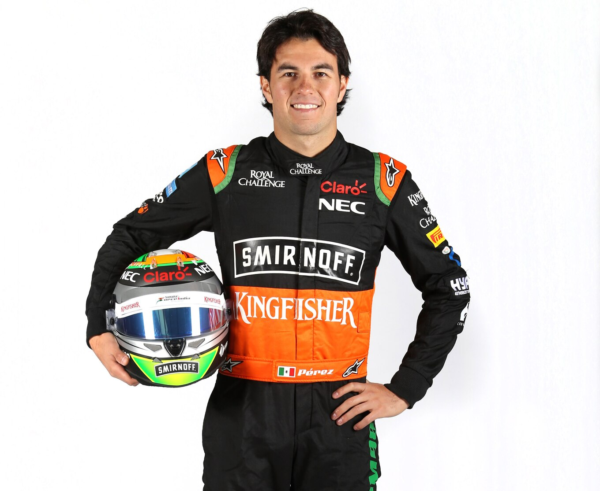
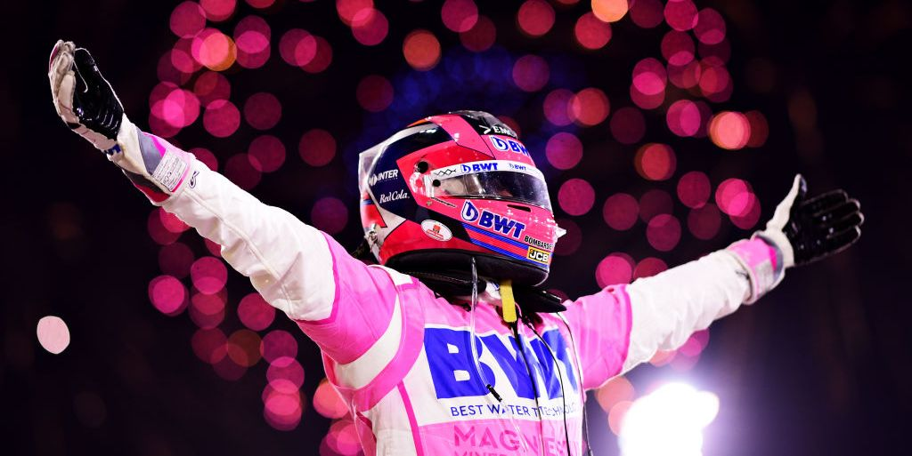
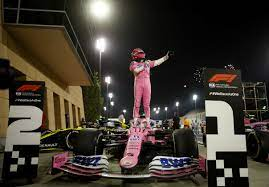
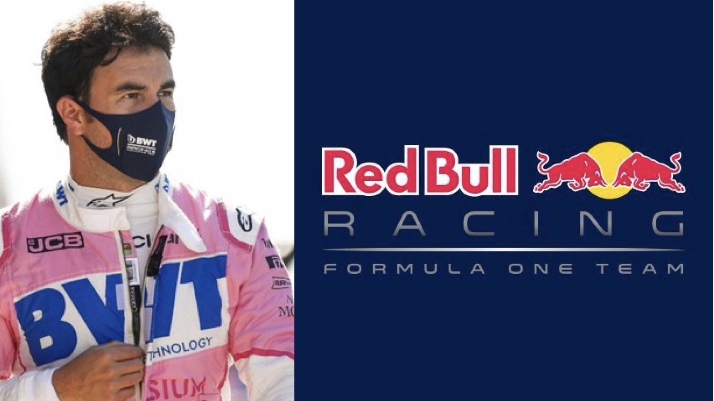
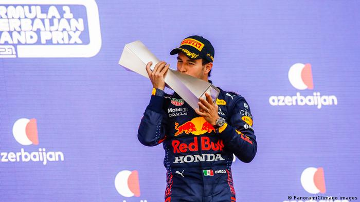
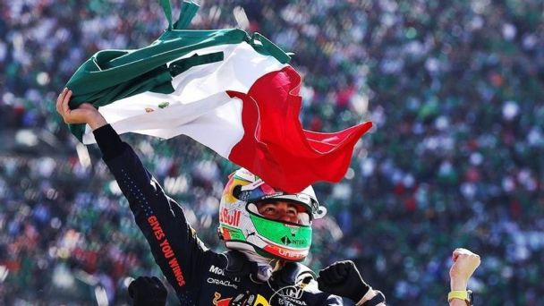
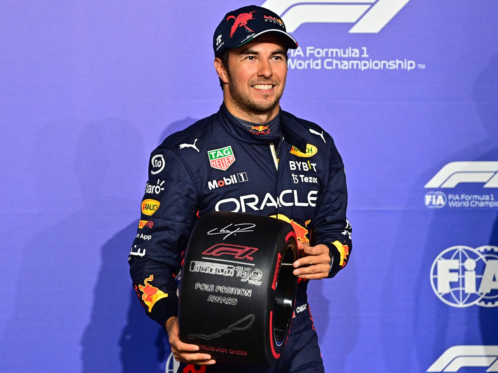
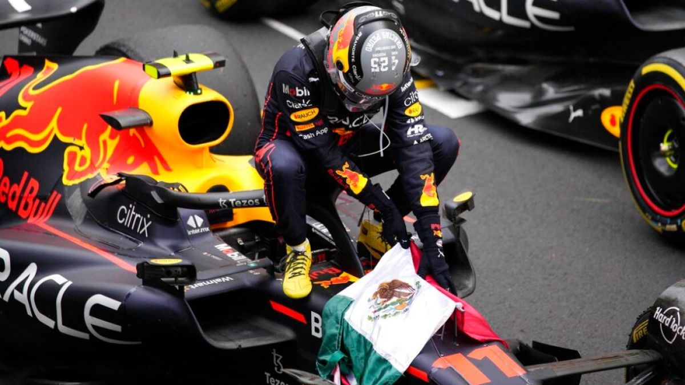
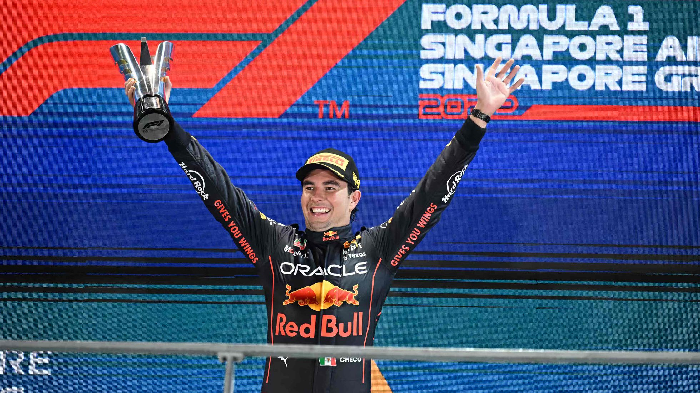

Sergio Michel Pérez Mendoza (Guadalajara, Jalisco, México; 26 de enero de 1990), también conocido como Checo Pérez,
es un piloto de automovilismo mexicano. Desde 2021 es piloto de Red Bull en Fórmula 1, resultando tercero en 2022.
Comenzó su carrera en 2004; en la Fórmula 3 Británica fue campeón en 2007. En 2009 debutó en la GP2 Series y al año
siguiente fue subcampeón. Fue miembro de la Academia de pilotos de Ferrari hasta 2012. Hizo su debut en Fórmula 1
con el equipo Sauber durante la temporada 2011, donde obtuvo su primer podio en el Gran Premio de Malasia de 2012.
Debido a su corta edad y buen desempeño, parte de la prensa lo apodó «El niño prodigio mexicano». Pérez se unió a
McLaren para la temporada 2013, pero sin lograr ningún podio.
Force India fichó a Pérez para la temporada 2014 con un contrato de 15 millones de euros.
Permaneció en Force India cuando el equipo entró en administración en 2018 y se reformó como Racing Point para 2019. Este último, le otorgó una extensión de tres años a su contrato como piloto. En septiembre de 2020, Racing Point anunció su salida al final de la temporada, sustituido por el tetracampeón del mundo Sebastian Vettel para la siguiente campaña.
 En diciembre, Pérez firmó con Red Bull Racing para 2021, luego de lograr su primera victoria de Fórmula 1 en el Gran Premio de Sakhir de 2020, convirtiéndose en el segundo mexicano después de Pedro Rodríguez en ganar un Gran Premio. Pérez obtuvo su segundo triunfo de su carrera en el Gran Premio de Azerbaiyán de 2021, el primero con Red Bull. Esa misma temporada consiguió 5 podios para el equipo.
  En 2022 logró su primera pole position en Fórmula 1 en el Gran Premio de Arabia Saudita. En mayo sumó su tercera victoria, después de ganar el Gran Premio de Mónaco y en septiembre obtuvo su cuarto triunfo en el Gran Premio de Singapur de 2022.
  